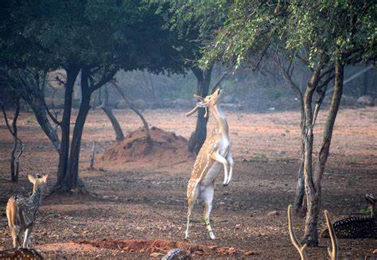
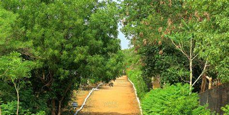

BHAGYANAGAR NANDANAVANAM PARK

Deemed as one of the ‘urban lung spaces” of Hyderabad, Bhagyanagar Nandanavanam Deer Park is nature conservative park situated on Hyderabad-Warangal National Highway. It houses a wide range of flora and fauna, prominent among them being
One can easily spot different varieties of deer while taking a walk around the serene landscape of the park.
Apart from being the house to wildlife creatures, the park has a lot more to offer in terms of well-laid cycling tracks, an elevated canopy walkway, a watchtower to facilitate bird watching, wildlife photography and much more.
The park is, in a nutshell, an abode of beauty and peace for all nature lovers. Besides, the park is one of the popular morning-walk areas among the local people. Park provides walking passes to them on affordable prices, promoting a healthy way of living.
Bhagyanagar Nandanavanam deer park also provides other facilities like meditation zone for yoga fans and a fully equipped play area for children making it an ideal place for a family hangout. Best time to visit the park is around October-February in monsoon season, when the scenic beauty of the park reaches its peak in the drenched state. However, almost throughout the whole year, the park attracts a lot of visitors, given the fact that the temperature in thick forest areas remains lower than the rest of the city.
Deemed as one of the ‘urban lung spaces” of Hyderabad, Bhagyanagar Nandanavanam Deer Park is nature conservative park situated on Hyderabad-Warangal National Highway. It houses a wide range of flora and fauna, prominent among them being
One can easily spot different varieties of deer while taking a walk around the serene landscape of the park.
Apart from being the house to wildlife creatures, the park has a lot more to offer in terms of well-laid cycling tracks, an elevated canopy walkway, a watchtower to facilitate bird watching, wildlife photography and much more.
The park is, in a nutshell, an abode of beauty and peace for all nature lovers. Besides, the park is one of the popular morning-walk areas among the local people. Park provides walking passes to them on affordable prices, promoting a healthy way of living.
Bhagyanagar Nandanavanam deer park also provides other facilities like meditation zone for yoga fans and a fully equipped play area for children making it an ideal place for a family hangout. Best time to visit the park is around October-February in monsoon season, when the scenic beauty of the park reaches its peak in the drenched state. However, almost throughout the whole year, the park attracts a lot of visitors, given the fact that the temperature in thick forest areas remains lower than the rest of the city.

How to reach:

By Air
The nearest airport is in hyderabad

By Train
The nearest railways is in hyderabad

By Road
bhagyanagar nandanadanam park, the most famous tourist destination in Hyderabad, can be used as a landmark. A bus,cab,local rickshaw can also be taken to reach the capital.